Code
pacman::p_load(igraph, tidygraph, ggraph,
visNetwork, lubridate, clock,
tidyverse, graphlayouts,
concaveman, ggforce)In the hands-on exercise, I will be learning how to model, analyse and visualize network data with R.
By the end of this hands-on exercise, I will be able to:
Create graph objects data frames, manipulate them using appropriate appropriate functions of dpylr, lubricate and tidygraph
Build network graph visualisation using appropriate functions of ggraph
compute network geometrics using tidygraph
build advanced graph visualisation by incorporating the network geometrics
build interactive network visualisation using visNetwork package
9.2.1 Installing and Launching R Packages
pacman::p_load(igraph, tidygraph, ggraph,
visNetwork, lubridate, clock,
tidyverse, graphlayouts,
concaveman, ggforce)The data sets used in this hands-on exercise is from an oil exploration and extraction company. There are two data sets. One contains the nodes data and the other contains the edges (also known as link) data.
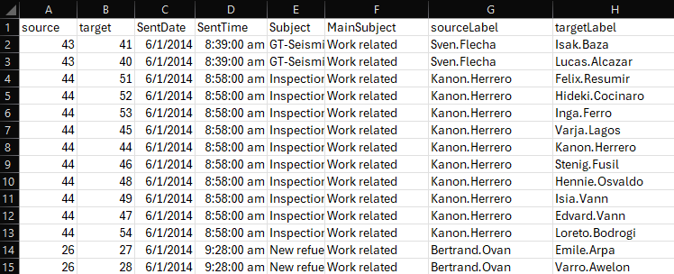
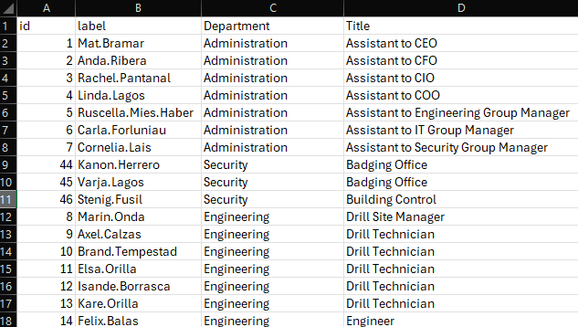
In this step, GAStech_email_node.csv and GAStech_email_edges-v2.csv will be imported into Rstudio environment by using read_csv of readr package.
GAStech_nodes <- read_csv("GAStech_email_node.csv")
GAStech_edges <- read_csv("GAStech_email_edge-v2.csv")Next, the structure of the data frame will be examined using glimpse() of dplyr.
glimpse(GAStech_edges)Rows: 9,063
Columns: 8
$ source <dbl> 43, 43, 44, 44, 44, 44, 44, 44, 44, 44, 44, 44, 26, 26, 26…
$ target <dbl> 41, 40, 51, 52, 53, 45, 44, 46, 48, 49, 47, 54, 27, 28, 29…
$ SentDate <chr> "6/1/2014", "6/1/2014", "6/1/2014", "6/1/2014", "6/1/2014"…
$ SentTime <time> 08:39:00, 08:39:00, 08:58:00, 08:58:00, 08:58:00, 08:58:0…
$ Subject <chr> "GT-SeismicProcessorPro Bug Report", "GT-SeismicProcessorP…
$ MainSubject <chr> "Work related", "Work related", "Work related", "Work rela…
$ sourceLabel <chr> "Sven.Flecha", "Sven.Flecha", "Kanon.Herrero", "Kanon.Herr…
$ targetLabel <chr> "Isak.Baza", "Lucas.Alcazar", "Felix.Resumir", "Hideki.Coc…The output report of GAStech_edges above revelas that the SentDate is treated as “Character” data type instead of date data type. This is an error! Before we continue, it is important for us to change the data type of SentDate field back to “Date” data type.
GAStech_edges <- GAStech_edges %>%
mutate(SendDate = dmy(SentDate)) %>%
mutate(Weekday = wday(SentDate,
label = TRUE,
abbr = FALSE))dmy() and wday() are functions of lubridate package. lubridate is an R package that makes it easier to work with dates and times.dmy() transforms the SentDate to Date data type.wday() returns the day of the week as a decimal number or an ordered factor if label is TRUE. The argument abbr is FALSE keeps the daya spells in full, i.e. Monday. The function will create a new column in the data.frame i.e. Weekday and the output of wday() will save in this newly created fieldTable below shows the data structure of the reformatted GAStech_edges data frame
Rows: 9,063
Columns: 10
$ source <dbl> 43, 43, 44, 44, 44, 44, 44, 44, 44, 44, 44, 44, 26, 26, 26…
$ target <dbl> 41, 40, 51, 52, 53, 45, 44, 46, 48, 49, 47, 54, 27, 28, 29…
$ SentDate <chr> "6/1/2014", "6/1/2014", "6/1/2014", "6/1/2014", "6/1/2014"…
$ SentTime <time> 08:39:00, 08:39:00, 08:58:00, 08:58:00, 08:58:00, 08:58:0…
$ Subject <chr> "GT-SeismicProcessorPro Bug Report", "GT-SeismicProcessorP…
$ MainSubject <chr> "Work related", "Work related", "Work related", "Work rela…
$ sourceLabel <chr> "Sven.Flecha", "Sven.Flecha", "Kanon.Herrero", "Kanon.Herr…
$ targetLabel <chr> "Isak.Baza", "Lucas.Alcazar", "Felix.Resumir", "Hideki.Coc…
$ SendDate <date> 2014-01-06, 2014-01-06, 2014-01-06, 2014-01-06, 2014-01-0…
$ Weekday <ord> Friday, Friday, Friday, Friday, Friday, Friday, Friday, Fr…A close examination of GAStech_edges data.frame reveals that it consists of individual e-mail flow records. This is not very useful for visualisation.
In view of this, we will aggregate the individual by date, senders, receivers, main subject and day of the week.
GAStech_edges_aggregated <- GAStech_edges %>%
filter(MainSubject == "Work related") %>%
group_by(source, target, Weekday) %>%
summarise(Weight = n()) %>%
filter(source!=target) %>%
filter(Weight > 1) %>%
ungroup()Table below shows the data structure of the reformatted GAStech_edges data frame
Rows: 9,063
Columns: 10
$ source <dbl> 43, 43, 44, 44, 44, 44, 44, 44, 44, 44, 44, 44, 26, 26, 26…
$ target <dbl> 41, 40, 51, 52, 53, 45, 44, 46, 48, 49, 47, 54, 27, 28, 29…
$ SentDate <chr> "6/1/2014", "6/1/2014", "6/1/2014", "6/1/2014", "6/1/2014"…
$ SentTime <time> 08:39:00, 08:39:00, 08:58:00, 08:58:00, 08:58:00, 08:58:0…
$ Subject <chr> "GT-SeismicProcessorPro Bug Report", "GT-SeismicProcessorP…
$ MainSubject <chr> "Work related", "Work related", "Work related", "Work rela…
$ sourceLabel <chr> "Sven.Flecha", "Sven.Flecha", "Kanon.Herrero", "Kanon.Herr…
$ targetLabel <chr> "Isak.Baza", "Lucas.Alcazar", "Felix.Resumir", "Hideki.Coc…
$ SendDate <date> 2014-01-06, 2014-01-06, 2014-01-06, 2014-01-06, 2014-01-0…
$ Weekday <ord> Friday, Friday, Friday, Friday, Friday, Friday, Friday, Fr…In this section, you will learn how to create a graph data model by using tidygraph package. It provides a tidy API for graph/network manipulation. While network data itself is not tidy, it can be envisioned as two tidy tables, one for node data and one for edge data. Tidygraph provides a way to switch between the two tables and provides dplyr verbs for manipulating them. Furthermore, it provides access to a lot of graph algorithms with return values that facilitate their use in a tidy workflow.
The two articles below provide more information:
Two functions of tidygraph package can be used to create network objects, they are:
tbl_graph() creates a tbl_graph net work object from nodes and edges data
as_tbl_graph() converts network data and objects to a tbl_graph network. Below are network data and objects supported by as_tbl_graph()
a node data.frame and an edge data.frame
data.frame, lst, matrix from base
igraph from igraph
network from network
dendogram and hclust from stats
Node from data.tree
phylo and evonet from ape
graphNEL, graphAM, graphBAM from graph (in Bioconductor)
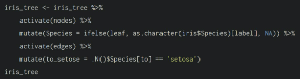
tbl_graph() to build tidy graph data modelIn this section, tbl_graph() of tinygraph package will be used to build a tidygraph’s network graph data.frame.
A reference guide of tbl_graph can be found here.
GAStech_graph <- tbl_graph(nodes = GAStech_nodes,
edges = GAStech_edges_aggregated,
directed = TRUE)GAStech_graph# A tbl_graph: 54 nodes and 1372 edges
#
# A directed multigraph with 1 component
#
# Node Data: 54 × 4 (active)
id label Department Title
<dbl> <chr> <chr> <chr>
1 1 Mat.Bramar Administration Assistant to CEO
2 2 Anda.Ribera Administration Assistant to CFO
3 3 Rachel.Pantanal Administration Assistant to CIO
4 4 Linda.Lagos Administration Assistant to COO
5 5 Ruscella.Mies.Haber Administration Assistant to Engineering Group Mana…
6 6 Carla.Forluniau Administration Assistant to IT Group Manager
7 7 Cornelia.Lais Administration Assistant to Security Group Manager
8 44 Kanon.Herrero Security Badging Office
9 45 Varja.Lagos Security Badging Office
10 46 Stenig.Fusil Security Building Control
# ℹ 44 more rows
#
# Edge Data: 1,372 × 4
from to Weekday Weight
<int> <int> <ord> <int>
1 1 2 Sunday 5
2 1 2 Monday 2
3 1 2 Tuesday 3
# ℹ 1,369 more rowsThe output above reveals that GAStech_graph is a tbl_graph object with 54 nodes and 4541 edges
The command also prints the first six rows of “Node Data” and the first three of “Edge Data”.
It states that the Node Data is active. The notion of an active tibble within a tbl_graph object makes it possible to manipulate the data in one tibble at a time.
The nodes tibble data frame is activated by default, but you can change which tibble data frame is active with the activate() function. Thus, if we wanted to rearrange the rows in the edges tibble to list those with the highest “weight” first, we could use activate() and then arrange().
GAStech_graph %>%
activate(edges) %>%
arrange(desc(Weight))# A tbl_graph: 54 nodes and 1372 edges
#
# A directed multigraph with 1 component
#
# Edge Data: 1,372 × 4 (active)
from to Weekday Weight
<int> <int> <ord> <int>
1 40 41 Saturday 13
2 41 43 Monday 11
3 35 31 Tuesday 10
4 40 41 Monday 10
5 40 43 Monday 10
6 36 32 Sunday 9
7 40 43 Saturday 9
8 41 40 Monday 9
9 19 15 Wednesday 8
10 35 38 Tuesday 8
# ℹ 1,362 more rows
#
# Node Data: 54 × 4
id label Department Title
<dbl> <chr> <chr> <chr>
1 1 Mat.Bramar Administration Assistant to CEO
2 2 Anda.Ribera Administration Assistant to CFO
3 3 Rachel.Pantanal Administration Assistant to CIO
# ℹ 51 more rowsMore information can be found in the reference guide of activate().
Ggraph is an extension of ggplot2, making it easier to carry over basic ggplot skills to the design of network graphs.
As in all network graphs, there are three main aspects to a ggraph’s network graph, they are:
For a comprehensive discussion of each of this aspect of graph, please refer to their respective vignettes provided.
The code chunk below uses ggraph(), geom-edge_link(), and geom_node_point to plot a network graph by using GAStech_graph.
ggraph(GAStech_graph) +
geom_edge_link() +
geom_node_point()
ggraph(), which takes the data to be used for the graph and the type of layout desired. Both of the arguments for ggraph are built around igraph. Therefore, ggraph() can use either an igraph object or a tbl_graph objectIn this section, you will use theme_graph() to remove the x and y axes.
g <- ggraph(GAStech_graph) +
geom_edge_link(aes()) +
geom_node_point(aes())
g + theme_graph()
ggraph introduces a special ggplot theme that provides better defaults for network graphs than the normal ggplot defaults. theme_graph(), besides removing axes, grids and broder, changes the font to Arial Narrow (this can be overridden)
The ggraph theme can be set for a series of plots with the set_graph_style() command run before the graphs are plotted or by using theme_graph() in the individual plots
The code theme_graph() makes it easy to change the coloring of the plot.
g <- ggraph(GAStech_graph) +
geom_edge_link(aes(colour = 'grey50')) +
geom_node_point(aes(colour = 'grey40'))
g + theme_graph(background = 'grey10',
text_colour = 'white')
ggraph support many layout for standard use, they are: star, circle, nicely(default), dh, gem, graphopt, grid, mds, spahere, randomly, fr, kk, drl and lgl. Figures below and on the right show layouts supported by ggraph.
library(knitr)
include_graphics("https://r4va.netlify.app/chap27/img/image4.jpg")
9.5.5 Fruchterman and Reingold Layout
The code chunks below will be used to plot the network graph using Fruchterman and Reingold layout.
g <- ggraph(GAStech_graph,
layout = "fr") +
geom_edge_link(aes()) +
geom_node_point(aes())
g + theme_graph()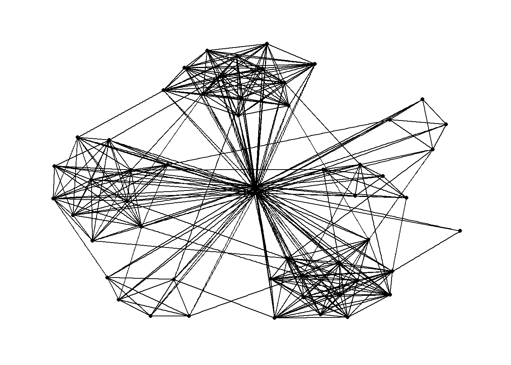
Each node will be colours based on their respective departments
g <- ggraph(GAStech_graph,
layout = "nicely") +
geom_edge_link(aes()) +
geom_node_point(aes(colour = Department,
size = 3))
g + theme_graph()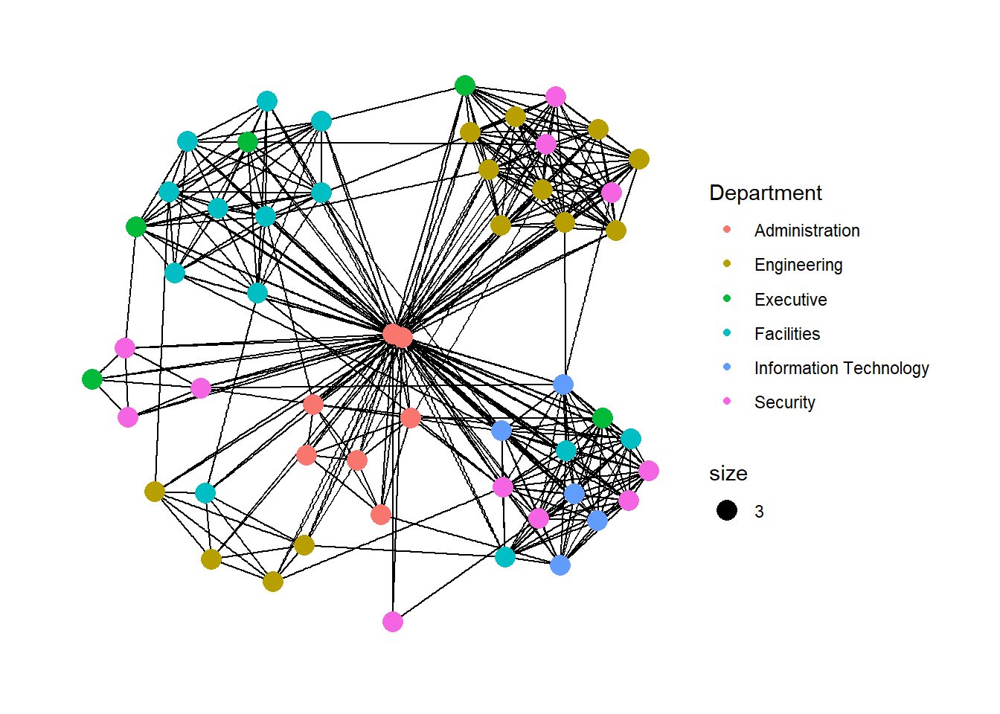
9.5.7 Modifying Edges
In the code chunk below, the thickness of the edges will be mapped with the Weight variable
g <- ggraph(GAStech_graph,
layout = "nicely") +
geom_edge_link(aes(width=Weight),
alpha=0.2) +
scale_edge_width(range = c(0.1, 5)) +
geom_node_point(aes(colour = Department),
size = 3)
g + theme_graph()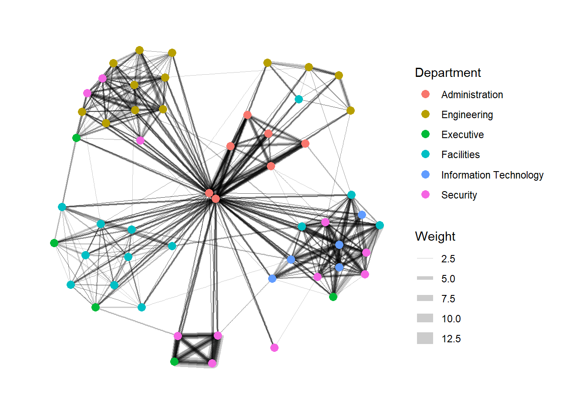
Another very useful feature of ggraph is faceting. In visualising network data, this technique can be used to reduce edge over-plotting in a very meaning way by spreading nodes and edges out based on their attributes. In this section, you will learn how to use faceting technique to visualise network data.
There are three functions in ggraph to implement faceting, they are:
facet_nodes() whereby edges are only draw in a panel if both terminal nodes are present here,
facet_edges() whereby nodes are always drawn in al panels even if the node data contains an attribute named the same as the one used for the edge facetting, and
facet_graph() faceting on two variables simultaneously.
In the code chunk below, facet_edges() is used.
set_graph_style()
g <- ggraph(GAStech_graph,
layout = "nicely") +
geom_edge_link(aes(width=Weight),
alpha=0.2) +
scale_edge_width(range = c(0.1, 5)) +
geom_node_point(aes(colour = Department),
size = 2)
g + facet_edges(~Weekday)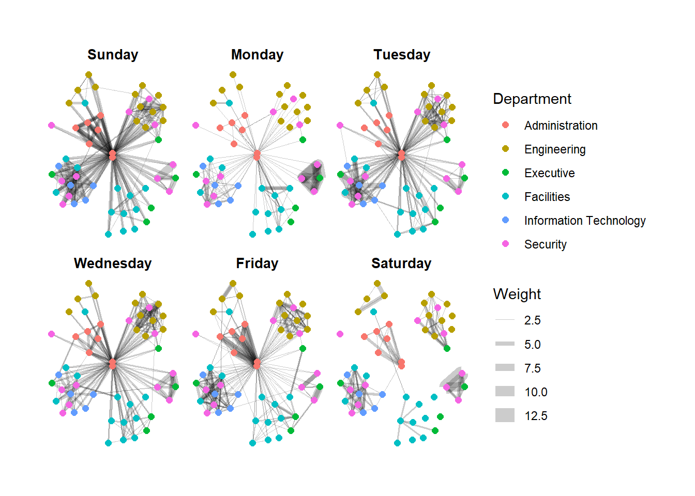
The code chunk below uses theme() to change the position of the legend.
set_graph_style()
g <- ggraph(GAStech_graph,
layout = "nicely") +
geom_edge_link(aes(width=Weight),
alpha=0.2) +
scale_edge_width(range = c(0.1, 5)) +
geom_node_point(aes(colour = Department),
size = 2) +
theme(legend.position = 'bottom')
g + facet_edges(~Weekday)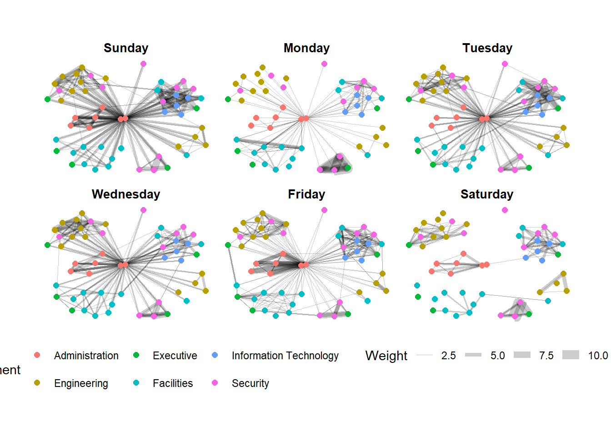
set_graph_style()
g <- ggraph(GAStech_graph,
layout = "nicely") +
geom_edge_link(aes(width=Weight),
alpha=0.2) +
scale_edge_width(range = c(0.1, 5)) +
geom_node_point(aes(colour = Department),
size = 2)
g + facet_edges(~Weekday) +
th_foreground(foreground = "grey80",
border = TRUE) +
theme(legend.position = 'bottom')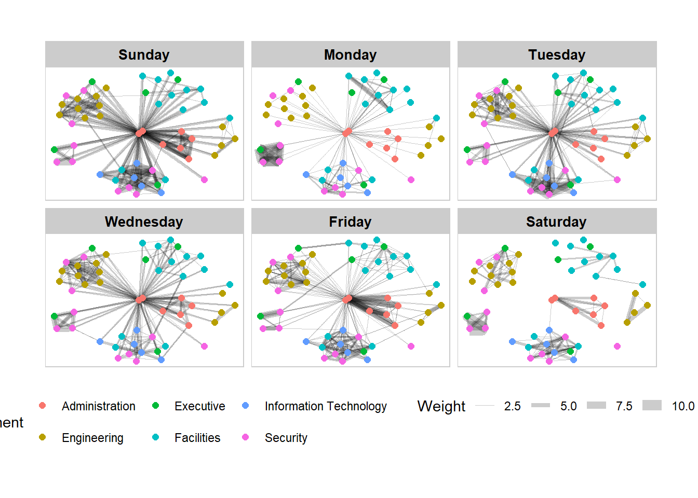
In the code chunk below, facet_nodes() is used.
set_graph_style()
g <- ggraph(GAStech_graph,
layout = "nicely") +
geom_edge_link(aes(width=Weight),
alpha=0.2) +
scale_edge_width(range = c(0.1, 5)) +
geom_node_point(aes(colour = Department),
size = 2)
g + facet_nodes(~Department)+
th_foreground(foreground = "grey80",
border = TRUE) +
theme(legend.position = 'bottom')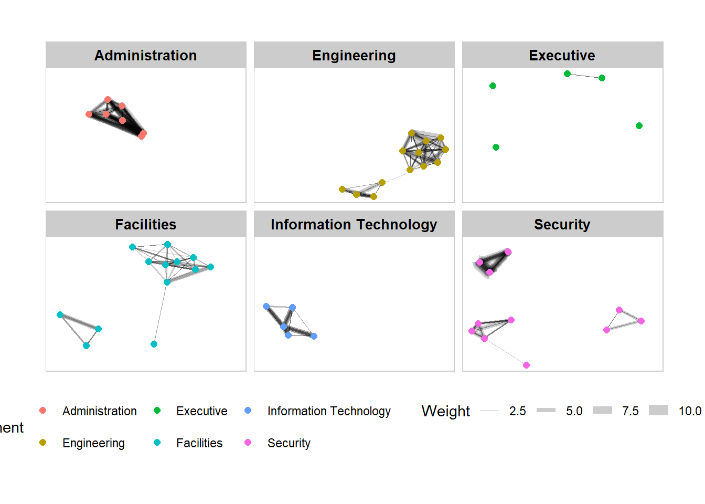
Centrality measures are a collection of statistical indices use to describe the relative important of the actors are to a network. There are four well-known centrality measures, namely: degree, betweenness, closeness and eigenvector. It is beyond the scope of this hands-on exercise to cover the principles and mathematics of these measure here. Students are encouraged to refer to Chapter 7: Actor Prominence of A User’s Guide to Network Analysis in R to gain better understanding of theses network measures.
g <- GAStech_graph %>%
mutate(betweenness_centrality = centrality_betweenness()) %>%
ggraph(layout = "fr") +
geom_edge_link(aes(width=Weight),
alpha=0.2) +
scale_edge_width(range = c(0.1, 5)) +
geom_node_point(aes(colour = Department,
size=betweenness_centrality))
g + theme_graph()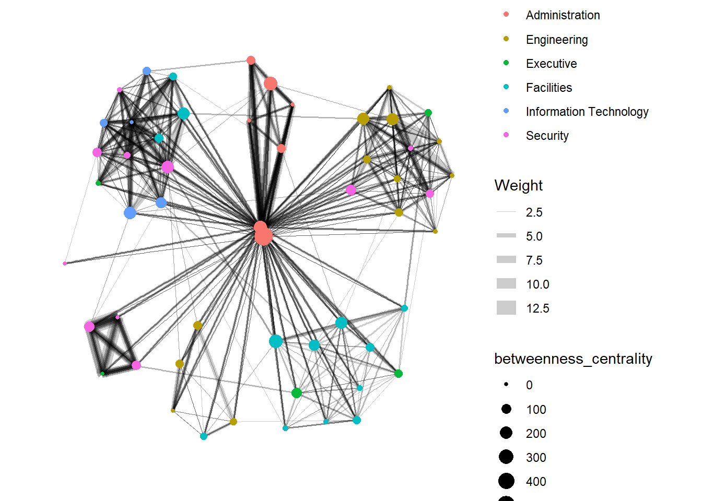
mutate() of dplyr is used to perform the computation
the algorithm used, on the other hand, is the centrality_betweenness() of tidygraph.
It is important to note that from ggraph v2.0 onward tidygraph algorithms such as centrality measures can be accessed directly in ggraph calls. This means that it is no longer necessary to precompute and store derived node and edge centrality measures on the graph in order to use them in a plot.
g <- GAStech_graph %>%
ggraph(layout = "fr") +
geom_edge_link(aes(width=Weight),
alpha=0.2) +
scale_edge_width(range = c(0.1, 5)) +
geom_node_point(aes(colour = Department,
size = centrality_betweenness()))
g + theme_graph()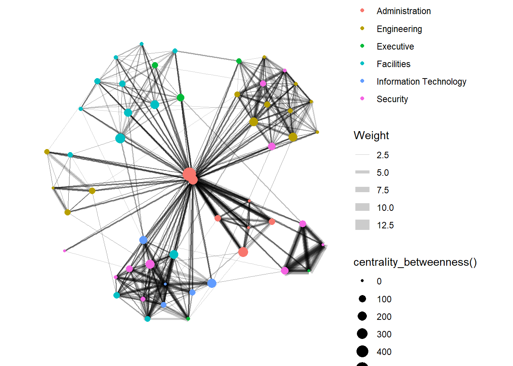
9.7.3 Visualising Community
tidygraph package inherits many of the community detection algorithms imbedded into igraph and makes them available to us, including Edge-betweenness (group_edge_betweenness), Leading eigenvector (group_leading_eigen), Fast-greedy (group_fast_greedy), Louvain (group_louvain), Walktrap (group_walktrap), Label propagation (group_label_prop), InfoMAP (group_infomap), Spinglass (group_spinglass), and Optimal (group_optimal). Some community algorithms are designed to take into account direction or weight, while others ignore it. Use this link to find out more about community detection functions provided by tidygraph,
In the code chunk below group_edge_betweenness() is used.
g <- GAStech_graph %>%
mutate(community = as.factor(
group_edge_betweenness(
weights = Weight,
directed = TRUE))) %>%
ggraph(layout = "fr") +
geom_edge_link(
aes(
width=Weight),
alpha=0.2) +
scale_edge_width(
range = c(0.1, 5)) +
geom_node_point(
aes(colour = community))
g + theme_graph()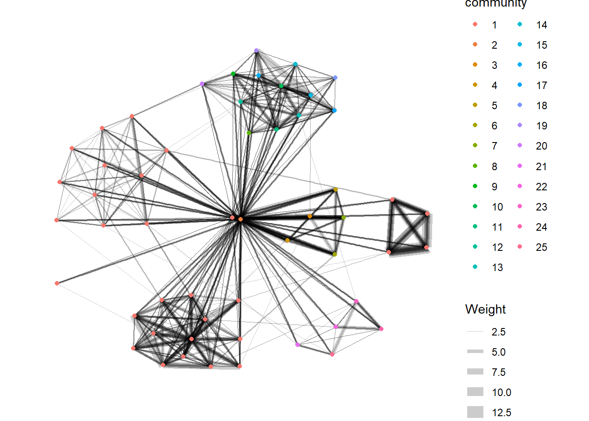
In order to support effective visual investigation, the community network above has been revised by using geom_mark_hull() of ggforce package.
Please be reminded that you must to install and include ggforce and concaveman packages before running the code chunk below.
library(ggforce)
library(concaveman)
library(tidygraph)
library(ggraph)
library(tidyverse)
library(igraph)
g <- GAStech_graph %>%
activate(nodes) %>%
mutate(community = as.factor(
group_optimal(weights = Weight)),
betweenness_measure = centrality_betweenness()) %>%
ggraph(layout = "fr") +
geom_mark_hull(
aes(x, y,
group = community,
fill = community),
alpha = 0.2,
expand = unit(0.3, "cm"), # Expand
radius = unit(0.3, "cm") # Smoothness
) +
geom_edge_link(aes(width=Weight),
alpha=0.2) +
scale_edge_width(range = c(0.1, 5)) +
geom_node_point(aes(fill = Department,
size = betweenness_measure),
color = "black",
shape = 21)
g + theme_graph()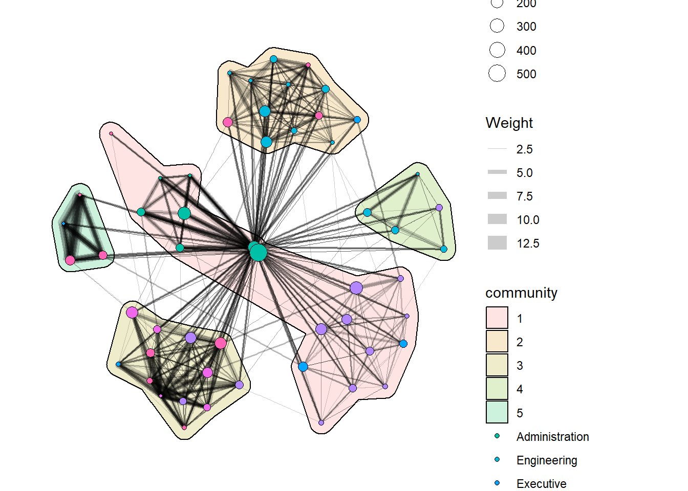
visNetwork() is a R package for network visualization, using vis.js javascript library.
visNetwork() function uses a nodes list and edges list to create an interactive graph.
The nodes list must include an “id” column, and the edge list must have “from” and “to” columns.
The function also plots the labels for the nodes, using the names of the actors from the “label” column in the node list.
The resulting graph is fun to play around with.
You can move the nodes and the graph will use an algorithm to keep the nodes properly spaced.
You can also zoom in and out on the plot and move it around to re-center it.
Before we can plot the interactive network graph, we need to prepare the data model by using the code chunk below:
GAStech_edges_aggregated <- GAStech_edges %>%
left_join(GAStech_nodes, by = c("sourceLabel" = "label")) %>%
rename(from = id) %>%
left_join(GAStech_nodes, by = c("targetLabel" = "label")) %>%
rename(to = id) %>%
filter(MainSubject == "Work related") %>%
group_by(from, to) %>%
summarise(weight = n()) %>%
filter(from!=to) %>%
filter(weight > 1) %>%
ungroup()The code chunk below will be used to plot an interactive network graph by using the data prepared.
visNetwork(GAStech_nodes,
GAStech_edges_aggregated)In the code chunk below, Fruchterman and Reingold layout is used.
visNetwork(GAStech_nodes,
GAStech_edges_aggregated) %>%
visIgraphLayout(layout = "layout_with_fr") visNetwork() looks for a field called “group” in the nodes object and colour the nodes according to the values of the group field.
The code chunk below rename Department field to group
GAStech_nodes <- GAStech_nodes %>%
rename(group = Department) visNetwork(GAStech_nodes,
GAStech_edges_aggregated) %>%
visIgraphLayout(layout = "layout_with_fr") %>%
visLegend() %>%
visLayout(randomSeed = 123)In the code run below visEdges() is used to symbolise the edges.
- The argument arrows is used to define where to place the arrow.
- The smooth argument is used to plot the edges using a smooth curve.
visNetwork(GAStech_nodes,
GAStech_edges_aggregated) %>%
visIgraphLayout(layout = "layout_with_fr") %>%
visEdges(arrows = "to",
smooth = list(enabled = TRUE,
type = "curvedCW")) %>%
visLegend() %>%
visLayout(randomSeed = 123)Visit Option to find out more about visEdges’s argument.
In the code chunk below, visOptions() is used to incorporate interactivity features in the data visualisation.
The argument highlightNearest highlights nearest when clicking a node.
The argument nodesIdSelection adds an id node selection creating an HTML select element.
visNetwork(GAStech_nodes,
GAStech_edges_aggregated) %>%
visIgraphLayout(layout = "layout_with_fr") %>%
visOptions(highlightNearest = TRUE,
nodesIdSelection = TRUE) %>%
visLegend() %>%
visLayout(randomSeed = 123)Visit Option to find out more about visOption’s argument.
Generate random data using seed. There needs to be a character vector to represent categories, a numeric vector of x and y values.
set.seed(999)
n = 1000
df = data.frame(sectors = sample(letters[1:8], n, replace = TRUE),
x = rnorm(n), y = runif(n))Next, the circular layout will be initialized. the circle is split into sectors based on the data range on x-axes in each category. In the following code, dfx is split by sectors and the width of the sectors are automatically calculated based on data ranges in each category. By default, sectors are positioned starting from teter = 0 (in the polar coordinate system) and go along the circle clockwise. No track has been added so there will be no display yet.
A global parameter track.height = 0.1 is set by the option function circis.par() so that all tracks which will eb added have a default height of 0.1. The circle used by circlize always have a radius of 1, so a height of 0.1 means 10% of the circle radius.
The allocation of sectors only need values on x direction (or on the circular direction), the values on y direction (radical direction) will be used in the step of creating tracks.
After the circular layout is initialized, graphics can be added to the plot in a track-by-track manner. Before drawing anything, we need to know that all tracks should be first created by circos.trackPlotRegion() or, for short, circos.track(), then the low-level functions can be added afterwards. Just think in the base R graphic engine, you need first call plot() then you can use functions such as points() and lines() to add graphics. Since x-ranges for cells in the track have already been defined in the initialization step, here we only need to specify the y-range for each cell. The y-ranges can be specified by y argument as a numeric vector (so that y-range will be automatically extracted and calculated in each cell) or ylim argument as a vector of length two. In principle, y-ranges should be same for all cells in a same track
library(circlize)
circos.clear()
circos.par("track.height" = 0.1)
circos.initialize(factors = df$sectors, x = df$x)
circos.track(df$sectors, y = df$y,
panel.fun = function(x, y) {
circos.text(CELL_META$xcenter,
CELL_META$cell.ylim[3] + mm_y(5),
CELL_META$sector.index)
circos.axis(labels.cex = 0.6)
})
col = rep(c("#FF0000", "#00FF00"), 4)
circos.trackPoints(df$sectors, df$x, df$y, col = col, pch = 16, cex = 0.5)
circos.text(-1, 0.5, "text", sector.index = "a", track.index = 1)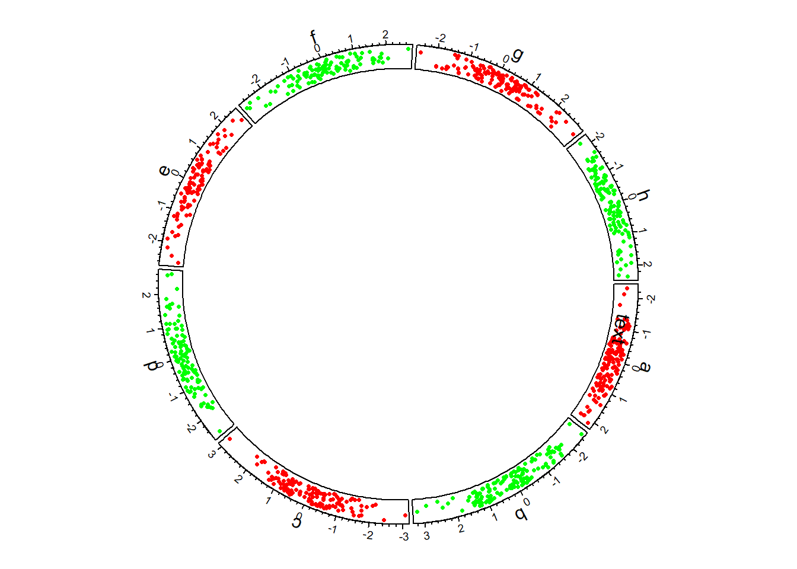
Next, axes are added by using circos.axis() inside panel.fun. circos.track() creates plotting region in a cell by cell manner and the panel.fun is actually executed immediately after the plotting region for a certain cell is created and adds graphics in the current cell. Without specifying any arguments, circos.axis() draws x-axes on the top of each cell.
circos.text CELL_META provides “meta information” for the current cell. When specifying the position of text on the y-direction, an offset of mm_y(5) 5mm is added to the y position of the text. In circos.text, x and y values are measured in the data coordinate and there are some helper functions that convert absolute units to corresponding values in data coordinate.
circos.trackPoints() add points in all cells simultaneously anc can be replaced by putting circos.text() in panel.fun().
circos.trackHist() creates a new track. bin.size is set explicitly to that the bin size for all histograms are the same and can be compared to each other.
library(circlize)
circos.clear()
circos.par("track.height" = 0.1)
circos.initialize(factors = df$sectors, x = df$x)
circos.track(df$sectors, y = df$y,
panel.fun = function(x, y) {
circos.text(CELL_META$xcenter,
CELL_META$cell.ylim[3] + mm_y(5),
CELL_META$sector.index)
circos.axis(labels.cex = 0.6)
})
col = rep(c("#FF0000", "#00FF00"), 4)
circos.trackPoints(df$sectors, df$x, df$y, col = col, pch = 16, cex = 0.5)
circos.text(-1, 0.5, "text", sector.index = "a", track.index = 1)
bgcol = rep(c("#EFEFEF", "#CCCCCC"), 4)
circos.trackHist(df$sectors, df$x, bin.size = 0.2, bg.col = bgcol, col = NA)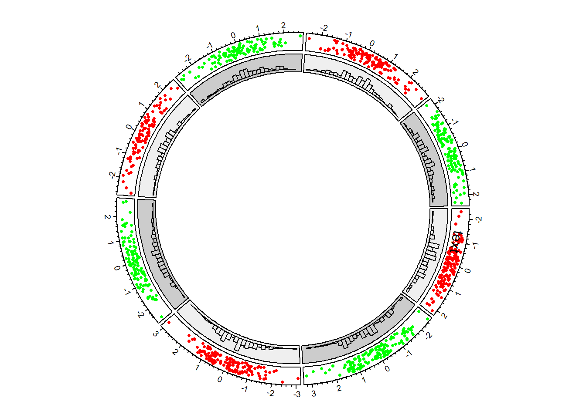
In the third track, panel.fun, 10 data points are randomly picked in each cell and sorted by x-values and connected with lines. In the following code, when sectors x and y arguments are set in circos.track(), x values and y values are split by sectos and corresponding subset of x and y values are sent to panel.fun through the x and y arguments.
library(circlize)
circos.clear()
circos.par("track.height" = 0.1)
circos.initialize(factors = df$sectors, x = df$x)
circos.track(df$sectors, y = df$y,
panel.fun = function(x, y) {
circos.text(CELL_META$xcenter,
CELL_META$cell.ylim[3] + mm_y(5.5),
CELL_META$sector.index)
circos.axis(labels.cex = 0.6)
})
col = rep(c("#FF0000", "#00FF00"), 4)
circos.trackPoints(df$sectors, df$x, df$y, col = col, pch = 16, cex = 0.5)
circos.text(-1, 0.5, "text", sector.index = "a", track.index = 1)
bgcol = rep(c("#EFEFEF", "#CCCCCC"), 4)
circos.trackHist(df$sectors, df$x, bin.size = 0.2, bg.col = bgcol, col = NA)
circos.track(df$sectors, x = df$x, y = df$y,
panel.fun = function(x, y) {
ind = sample(length(x), 10)
x2 = x[ind]
y2 = y[ind]
od = order(x2)
circos.lines(x2[od], y2[od])
})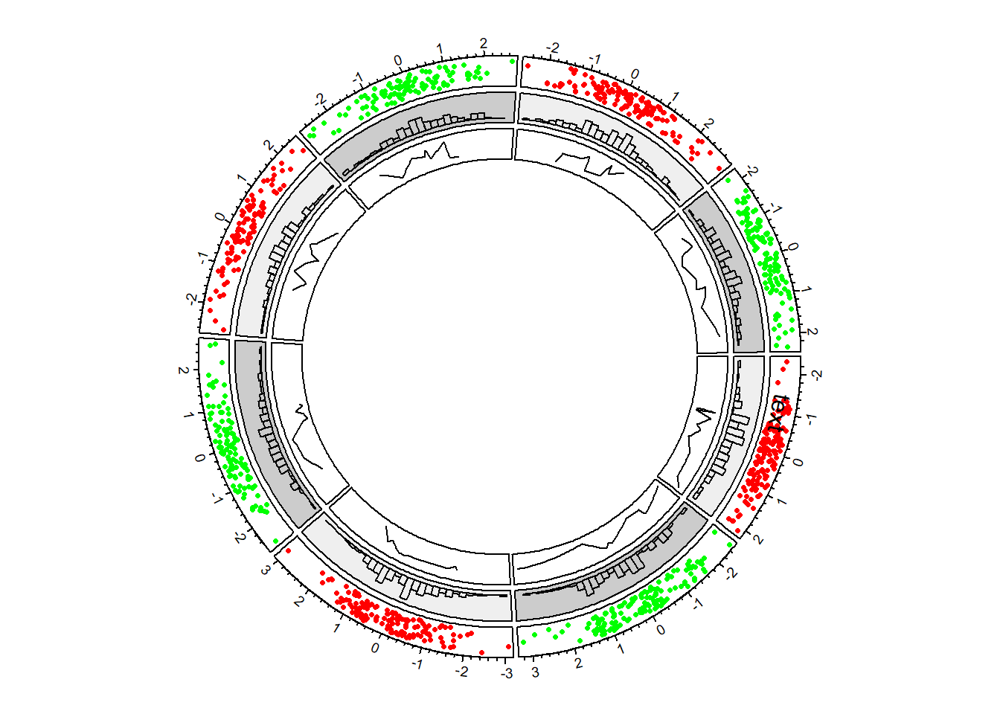
In the next plot, the second track is updated in the cell in sector “d”. This is done by circos.updatePlotRegion() or the short version circos.update . The function erases grgaphics which have been added but cannot modify the xlim and ylim of the cell.
library(circlize)
circos.clear()
circos.par("track.height" = 0.1)
circos.initialize(factors = df$sectors, x = df$x)
circos.track(df$sectors, y = df$y,
panel.fun = function(x, y) {
circos.text(CELL_META$xcenter,
CELL_META$cell.ylim[3] + mm_y(5.5),
CELL_META$sector.index)
circos.axis(labels.cex = 0.6)
})
col = rep(c("#FF0000", "#00FF00"), 4)
circos.trackPoints(df$sectors, df$x, df$y, col = col, pch = 16, cex = 0.5)
circos.text(-1, 0.5, "text", sector.index = "a", track.index = 1)
bgcol = rep(c("#EFEFEF", "#CCCCCC"), 4)
circos.trackHist(df$sectors, df$x, bin.size = 0.2, bg.col = bgcol, col = NA)
circos.track(df$sectors, x = df$x, y = df$y,
panel.fun = function(x, y) {
ind = sample(length(x), 10)
x2 = x[ind]
y2 = y[ind]
od = order(x2)
circos.lines(x2[od], y2[od])
})
circos.update(sector.index = "d", track.index = 2,
bg.col = "#FF8080", bg.border = "black")
circos.points(x = -2:2, y = rep(0.5, 5), col = "white")
circos.text(CELL_META$xcenter, CELL_META$ycenter, "updated", col = "white")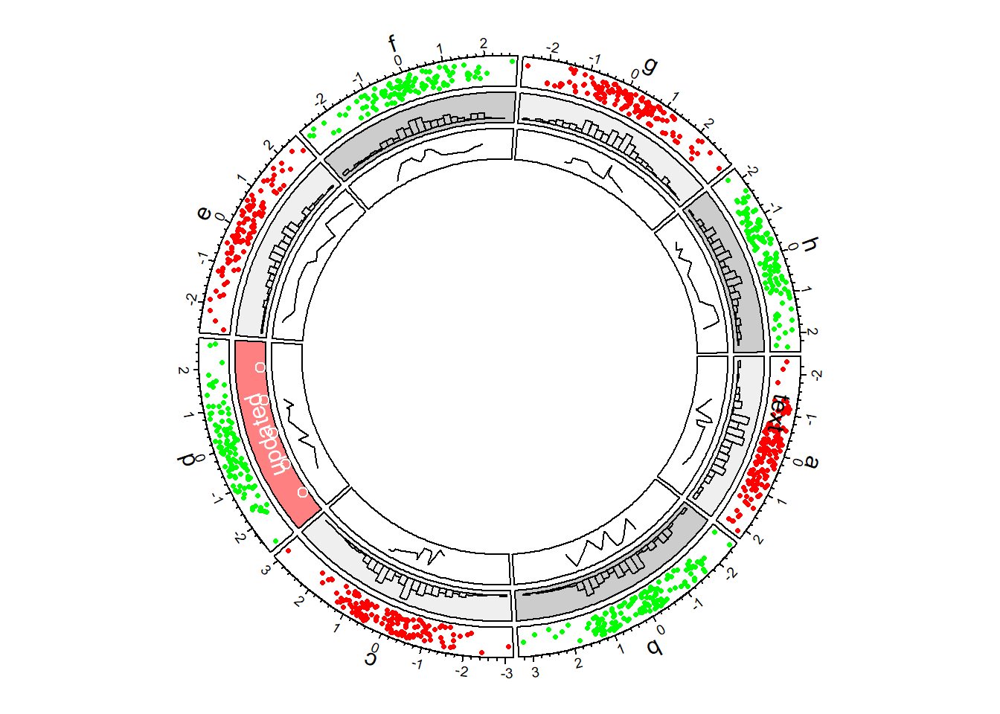
New tracks will be created and heatmaps added by using circos.rect().
library(circlize)
circos.clear()
circos.par("track.height" = 0.1)
circos.initialize(factors = df$sectors, x = df$x)
circos.track(df$sectors, y = df$y,
panel.fun = function(x, y) {
circos.text(CELL_META$xcenter,
CELL_META$cell.ylim[3] + mm_y(5.5),
CELL_META$sector.index)
circos.axis(labels.cex = 0.6)
})
col = rep(c("#FF0000", "#00FF00"), 4)
circos.trackPoints(df$sectors, df$x, df$y, col = col, pch = 16, cex = 0.5)
circos.text(-1, 0.5, "text", sector.index = "a", track.index = 1)
bgcol = rep(c("#EFEFEF", "#CCCCCC"), 4)
circos.trackHist(df$sectors, df$x, bin.size = 0.2, bg.col = bgcol, col = NA)
circos.track(df$sectors, x = df$x, y = df$y,
panel.fun = function(x, y) {
ind = sample(length(x), 10)
x2 = x[ind]
y2 = y[ind]
od = order(x2)
circos.lines(x2[od], y2[od])
})
circos.update(sector.index = "d", track.index = 2,
bg.col = "#FF8080", bg.border = "black")
circos.points(x = -2:2, y = rep(0.5, 5), col = "white")
circos.text(CELL_META$xcenter, CELL_META$ycenter, "updated", col = "white")
circos.track(ylim = c(0, 1), panel.fun = function(x, y) {
xlim = CELL_META$xlim
ylim = CELL_META$ylim
breaks = seq(xlim[1], xlim[2], by = 0.1)
n_breaks = length(breaks)
circos.rect(breaks[-n_breaks], rep(ylim[1], n_breaks - 1),
breaks[-1], rep(ylim[2], n_breaks - 1),
col = rand_color(n_breaks), border = NA)
})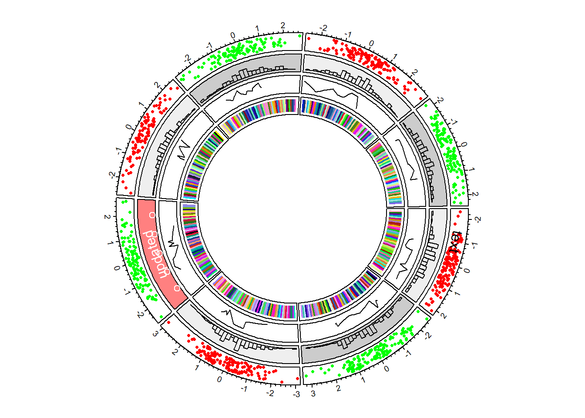
In the most inside circle, links or ribbons are added using circos.link.
library(circlize)
circos.clear()
circos.par("track.height" = 0.1)
circos.initialize(factors = df$sectors, x = df$x)
circos.track(df$sectors, y = df$y,
panel.fun = function(x, y) {
circos.text(CELL_META$xcenter,
CELL_META$cell.ylim[3] + mm_y(5.5),
CELL_META$sector.index)
circos.axis(labels.cex = 0.6)
})
col = rep(c("#FF0000", "#00FF00"), 4)
circos.trackPoints(df$sectors, df$x, df$y, col = col, pch = 16, cex = 0.5)
circos.text(-1, 0.5, "text", sector.index = "a", track.index = 1)
bgcol = rep(c("#EFEFEF", "#CCCCCC"), 4)
circos.trackHist(df$sectors, df$x, bin.size = 0.2, bg.col = bgcol, col = NA)
circos.track(df$sectors, x = df$x, y = df$y,
panel.fun = function(x, y) {
ind = sample(length(x), 10)
x2 = x[ind]
y2 = y[ind]
od = order(x2)
circos.lines(x2[od], y2[od])
})
circos.update(sector.index = "d", track.index = 2,
bg.col = "#FF8080", bg.border = "black")
circos.points(x = -2:2, y = rep(0.5, 5), col = "white")
circos.text(CELL_META$xcenter, CELL_META$ycenter, "updated", col = "white")
circos.track(ylim = c(0, 1), panel.fun = function(x, y) {
xlim = CELL_META$xlim
ylim = CELL_META$ylim
breaks = seq(xlim[1], xlim[2], by = 0.1)
n_breaks = length(breaks)
circos.rect(breaks[-n_breaks], rep(ylim[1], n_breaks - 1),
breaks[-1], rep(ylim[2], n_breaks - 1),
col = rand_color(n_breaks), border = NA)
})
circos.link("a", 0, "b", 0, h = 0.4)
circos.link("c", c(-0.5, 0.5), "d", c(-0.5,0.5), col = "red",
border = "blue", h = 0.2)
circos.link("e", 0, "g", c(-1,1), col = "green", border = "black", lwd = 2, lty = 2)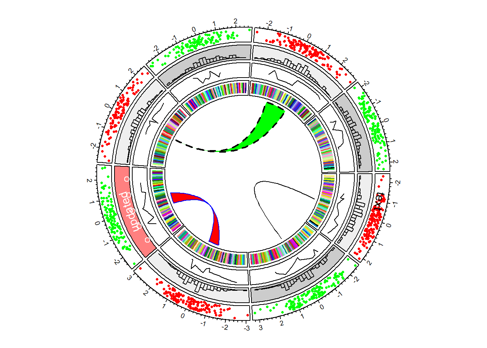
To reset the graphic parameters, we can use circos.clear().